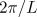
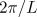

Aside from plane waves, a host of other exotic solutions have been observed in the CGLE. In particular, several different forms of spatiotemporal chaotic or disordered states have been found. Shraiman et al. (1992) distinguished between two forms of chaotic behaviour found beyond the regime of stable plane waves. These are defect-mediated turbulence and phase turbulence, an example of each is given below. This picture was extended by Chaté (1994) who identified spatiotemporal intermittency in the regime where plane waves are stable.
These behaviours can be summarised in the following phase diagram.
We now give a brief description of each of these behaviours. (Click on the images to see a larger version.)


 .
.
Turbulence in this region is characterised by 'defects' (i.e., points
in space-time where  ). At these points,
the phase is not defined and can vary by multiples of  when
going through them (
). At these points,
the phase is not defined and can vary by multiples of  when
going through them ( is the container size).
is the container size).


In this form of chaotic behaviour,  never
reaches zero and the total phase is conserved. This behaviour
occurs just above the BF line in the phase diagram where the amplitude
can be seen to be strongly slaved to the
marginal phase mode. This allows a description of the dynamics to be
formulated based on a systematic expansion in gradients of the phase. The
resulting equation is the Kuramoto-Sivashinsky equation.
never
reaches zero and the total phase is conserved. This behaviour
occurs just above the BF line in the phase diagram where the amplitude
can be seen to be strongly slaved to the
marginal phase mode. This allows a description of the dynamics to be
formulated based on a systematic expansion in gradients of the phase. The
resulting equation is the Kuramoto-Sivashinsky equation.


 . The intial condition
was composed of two localised pulses.
. The intial condition
was composed of two localised pulses.
In the region of the phase diagram below the Benjamin-Feir instability line, plane waves attract most initial conditions. However, using a suitably large and localised initial condition, spatio-temporally intermittent states, such as the one above, have been found. These are characterised by localised structures (similar to holes - see below) which evolve in a complicated fashion and delimit regions of uniform amplitude. See Chaté (1994) for further details.


 . Here the
initial condition was composed of two localised pulses.
. Here the
initial condition was composed of two localised pulses.
Aside from plane waves, many other nonlinear solutions exist. The best known are Bekki-Nozaki holes (Bekki and Nozaki, 1985), which are illustrated above (the holes are the sharp dips in amplitude). These structures asymptotically connect plane waves of different amplitude and wavenumber (see Lega, 2001 for further details). Holes are part of a family of solutions called coherent structures which are comprised of fixed spatial profiles that can vary through propagation and oscillation. Other coherent structures include sinks, fronts and shocks amongst others (the small peaks in the above figure are shocks). A comprehensive review of coherent structures in the 1D CGLE is provided by van Saarloos and Hohenberg (1992).